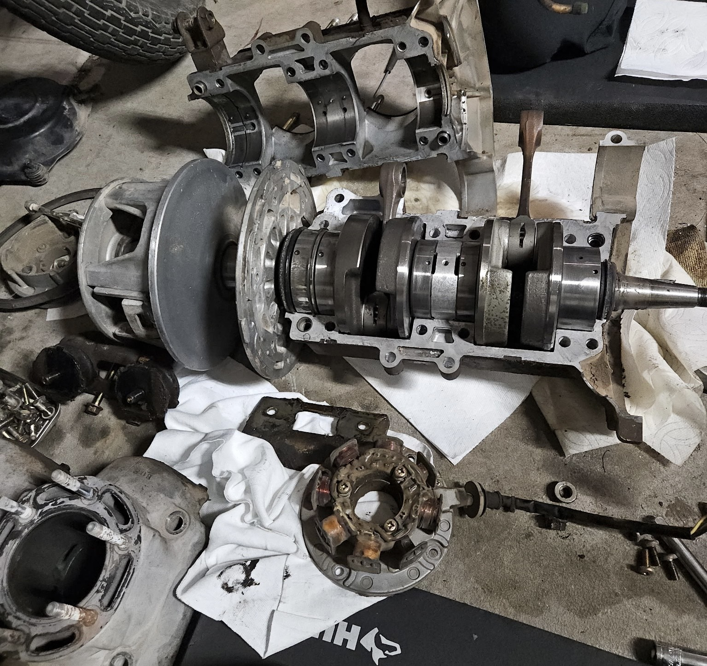

This project involves restoring a modified Crossfire go-kart that was retrofitted with a 500cc snowmobile engine. The vehicle was acquired in non-running condition and required troubleshooting across several systems.
I began by disassembling the engine and drivetrain components to inspect the condition of the system and identify possible causes of the non-operation.
Internal engine components were inspected for mechanical wear, damage, and other conditions that could prevent the engine from operating correctly. The fuel and ignition systems were also considered during the diagnostic process.
The findings from the teardown are being used to determine which components need to be repaired or replaced and to develop a plan for rebuilding the engine and returning the go-kart to reliable operating condition.
Engine Diagnostics • Failure Analysis • Mechanical Repair • Engine Disassembly • Troubleshooting • Drivetrain Systems